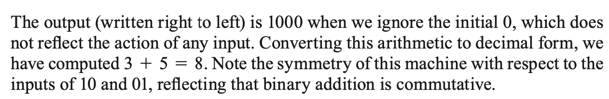
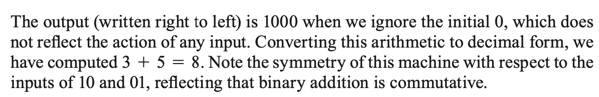

Chapter 9: Finite-State Machines, Turing machines
Section 9.3 Finite-State Machines
Examples of Finite-State Machines
Binary Adder:
If finite-state machines model real-world computers, they should be able to do something. Let's try to build a
finite-state machine that will add two binary numbers. The input will consist of a sequence of pairs of binary
digits, each of the form 00, 01, 10, or 11. Each pair represents one column of digits of the two numbers to be
added, least significant digits first (so in this particular case, read the inputs column by column right to left).
The basic facts of binary addition:
 

Practice
Reference
Wikipedia